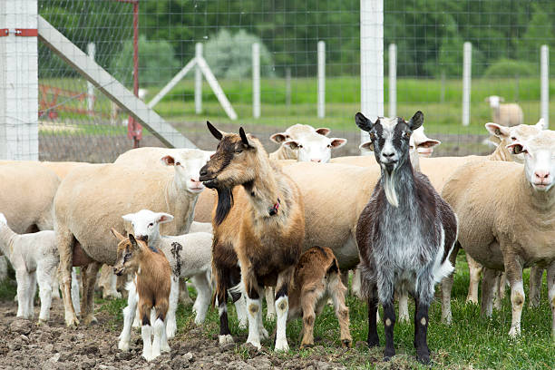

Welcome to AgriNova Market
Explore agricultural products, farming opportunities and markets.
Find useful information to help you make better farming decisions.
Understanding the Agricultural Market
Agricultural markets help farmers sell their products and connect with buyers. They also provide information about prices, demand and business opportunities. AgriNova shares useful information to help farmers, students and new agribusiness owners understand agricultural markets.
Explore Our Market Categories
Find different agricultural products and services.
Agricultural Products & Opportunities
Explore products and farming opportunities in different agricultural sectors.
1. Crop Products
Crops provide food and income for many farmers.

Maize
Maize is used for food, animal feeds and flour production.

Sorghum
Sorghum is used for food, animal feeds and processing.

Millet
Millet is a nutritious crop grown in different parts of Kenya.
2. Livestock & Animal Products
Livestock provides food and income through the sale of animals and their products.

Dairy Cattle & Milk
Dairy farming provides milk for homes, shops and processors.

Poultry & Eggs
Poultry farming provides eggs, meat and breeding stock.

Goats & Sheep
Goats and sheep are kept for meat, milk and breeding.
3. Horticulture & Cash Crops
These crops provide food and income in local and export markets.

Tomatoes
Tomatoes are sold to households, shops and restaurants.

Onions
Onions are widely used in homes and food businesses.

Avocados
Avocados are sold in local and international markets.
4. Value-Added Products
These products are processed or improved before they are sold.

Milled Maize Flour
Maize is milled and packaged for sale and consumption.

Honey
Honey is produced through beekeeping and sold in different markets.

Dried Fruits
Fruit drying helps preserve fruits for longer periods.
5. Agricultural Inputs & Services
These inputs and services help farmers carry out their farm activities.

Seeds & Seedlings
Good seeds and healthy seedlings help crops grow well.

Fertilizers & Soil Testing
Soil testing helps farmers choose the right fertilizers.

Animal Feeds
Animal feeds provide nutrients needed for livestock growth and production.
Learn About Agricultural Markets
Learn how to find markets, manage farm costs and calculate profit.
Market Opportunities
Learn where to find buyers, understand demand and choose the right market for your products.
Farm Cost Analysis
Understand the costs of seeds, labour, fertilizers, feeds, transport and other farm activities.
Profit Estimation
Learn how to calculate sales, expenses and profit before starting a farming project.

Understanding agricultural prices and market trends.
Need Help With Your Farming Project?
Whether you are new to farming or already have a farm, AgriNova can help you learn about farming and market opportunities.
Get guidance on farm planning, production costs and finding markets.
Contact AgriNova